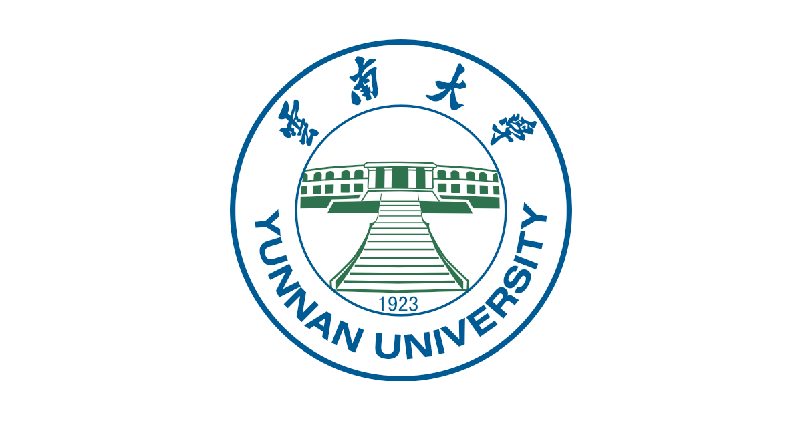
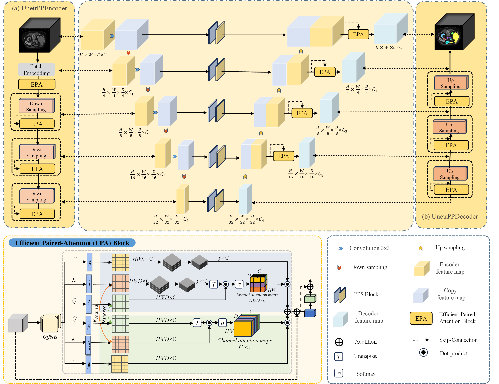
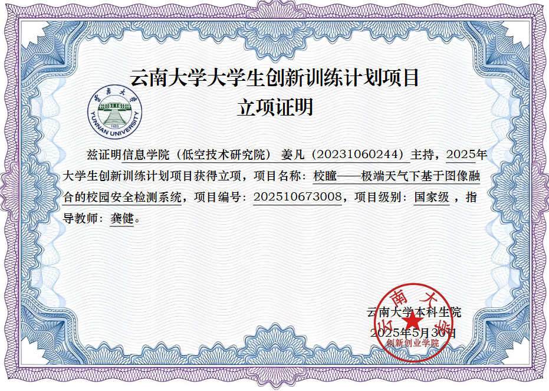
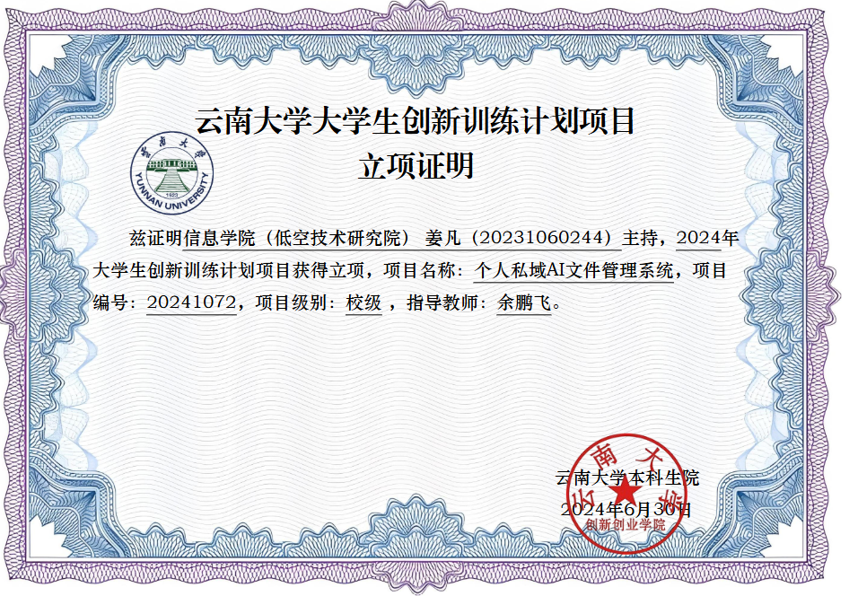
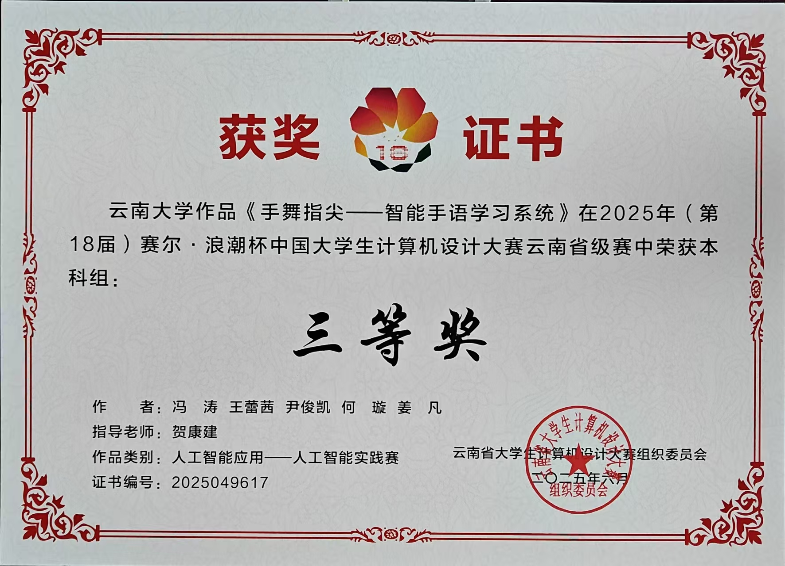

~/portfolio |
专注于深度学习与医学图像分割，以第一作者发表 SCI 论文（返修中）
综合成绩排名 2/99，获 ICPC 银奖、睿抗全国一等奖
" 以代码为笔，以数据为墨，在人工智能的画卷上书写属于自己的篇章 "

我是云南大学智能科学与技术专业 2023 级本科生，综合成绩排名 2/99。 专注于深度学习领域，尤其在医学图像分割方向以第一作者发表 SCI 论文（返修中）， 研究轻量化网络在实时图像去雾中的应用并以第二作者发表 CCF-C 会议论文。
在科研之外，我积极参与竞赛与项目开发，获 ICPC 银奖、睿抗全国一等奖等多项荣誉， 并主持两项大学生创新创业项目。我渴望在研究生阶段继续深耕人工智能领域， 以技术解决实际问题。

提出 Skip-Conv Refinement（SCR） 模块，在编码器-解码器跳跃连接中嵌入轻量卷积块校准跨级特征分布；设计 Position-Pre-fusion Strategy（PPS），重排 EPA 中残差融合与位置编码注入顺序，避免位置先验污染语义特征。
在 Synapse 多器官 CT 上 DSC 达 87.94%、HD95 降至 7.51mm，较 UNETR++ 提升 0.72% DSC、降低 0.72mm HD95；在 ACDC 心脏 MRI 与 BraTS 脑肿瘤 MRI 上取得一致提升。代码已开源。
提出超轻量级残差网络 SLRNet，设计自适应特征单元，采用非对称通道分割策略——半数通道深度可分离卷积变换，其余通道通过全局上下文 Sigmoid 门控自适应重校准，仅对半数通道计算，效率与表征能力兼顾。
参数量较竞品减少 10-25 倍，支持毫秒级实时处理；合成-真实域迁移泛化性强，仅凭合成数据训练即可在真实场景超越计算量大 10 倍的对比方法。
计算机软件著作权 2 项

极端天气下基于图像融合的校园安防系统
主导设计多模态图像融合与实时检测系统，引入光辨识感知模块实现光照自适应融合， 结合 Transformer 进行全局-局部协同特征提取，采用高斯差分（DoG）高频信息补偿。 基于 YOLOv8 优化目标检测，引入人体姿态估计构建实时骨架检测子系统。

全栈智能文件管理平台
主持开发全栈智能文件管理平台，后端采用 Spring Boot 框架，前端使用 Vue 框架， 集成 GPT 大语言模型 API。设计并实现 AI 知识库对话、文件智能导入、知识库个性化创建等模块， 支持自然语言交互的智能文件管理与知识库构建。

智能手语学习系统
参与开发面向听障人士及手语学习者的智能交互系统，利用计算机视觉与深度学习算法构建手语识别模型， 实现对手语动作的实时捕捉与语义翻译。设计交互式学习模块， 辅助完成从基础词汇到复杂句式的渐进式学习。
GitHub 获 20 Star
独立全栈开发，已上线
我渴望在研究生阶段继续深耕深度学习与医学图像分析方向， 以第一作者的科研经历为基础，在您的指导下产出更有价值的研究成果。 如您对我的背景感兴趣，欢迎随时与我取得联系。
以第一作者身份发表 SCI 论文，具备完整的科研闭环能力
扎实的数学与编程基础，综合成绩优异
ICPC 银奖、全栈开发经验、主持国家级大创项目